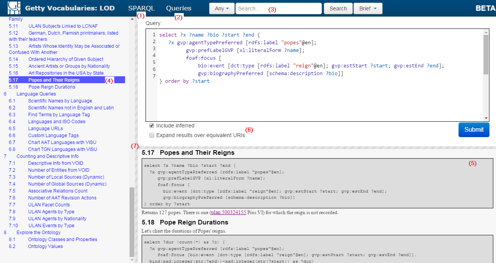
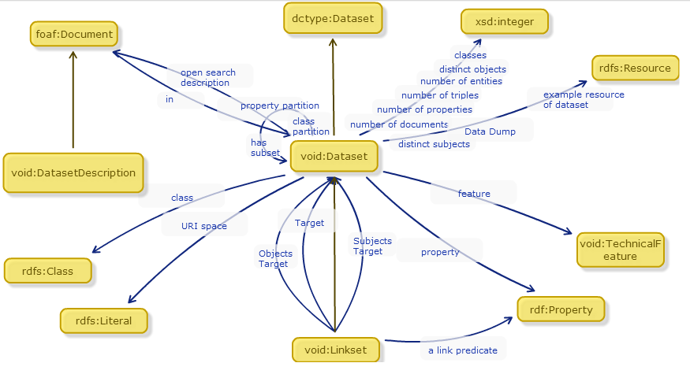

How to find Open Data and Ontologies
Vladimir Alexiev
2016-03-29
2D presentation (O for overview, ? for help). Continuous HTML. Publications
What is Open Data?
5stardata.info:
★ make your stuff available on the Web (whatever format) under an open license
★★ make it reusable as structured data (e.g., Excel instead of scanned table)
★★★ make it available in a non-proprietary open format (e.g., CSV + Excel)
★★★★ use URIs to denote things, so that people can point at your stuff
★★★★★ link your data to other data to provide context

Here we Focus on the Higher Levels
Levels 4 and 5 require the use of RDF
- Simple graph data model
- Every piece of data (and every property) has a URL
- Enables easy semantic data interation (but converting to RDF is not so easy)
Where can I buy such mug? W3C DesignIssues/LinkedData (TimBL 2009)

Application Areas
In this presentation we'll focus on data from these domains:
- Linguistics/NLP
- Cultural Heritage
- (No time: Statistics)
Finding Open Data
- Start from https://datahub.io, the global data portal
- It's implemented with CKAN (Github source)
- Many other data portals use CKAN, eg https://opendata.government.bg/
- Most often it's only a starting point
- Explore widely, as you can see in examples below
NLP Data
Representing language resources and text annotations as RDF
NLP Data
20 datasets, but IMHO only OLIA and Wordnet on the first page are most important
- Wordnet is an old release (2.0) that's outdated
- OLIA also points to an old release, see later
Use the tags, Luke!
- See tags on the left
- You can get more results by exploring "linguistics", "linguistic"…
- After some research, you can find more salient topics like "llod", "nif", "freme-project"…
NLP Data: OLIA
Explore OLIA: the first link is ok, but full data set is old (2012-09-16).
NLP LOD Working Groups
Look on the left, there's an Organization OWLG:
- gives you more datasets
- slightly misspelt, it's Open Linguistics Working Group (OLWG) at OKFN
There are 3 more Linguistic LD working groups at W3C:
- Ontology-Lexica (OntoLex)
- Linked Data for Language Technology (LD4LT)
- Best Practices for Multilingual LOD (BPMLOD)
NLP: Linguistic LOD Cloud
http://www.linguistic-lod.org/ by OLWG
NLP: Linguistic Hub
If you click on a dataset, you'll find they have their own data hub:
- http://linghub.lider-project.eu/
- Search for OLIA and you'll find 7 related datasets
- Including OLIA Discourse and lemonUby
- Explore Lemon and you'll find the Lexicon Model for Ontologies
- And then Babelnet
NLP: Babelnet
Babelnet integrates encyclopedic & linguistic knowledge. Pretty amazing: sample sentence

NLP Tag Cloud
Text Annotation Lexical Resources Corpora Semantic Annotation Opinion/Sentiment Analysis Working Groups: OLWG OntoLex LD4LT BPMLOD Projects: MultilingualWeb LIDER FALCON Multisensor FREME XML schemas: GRaF ITS2 LAF LMF UBY Linguistic Ontologies: FISE ITS2 MARL NERD NIF NLP2RDF OLIA OntoLing OntoTag Penn Stanford FrameNet Lexical Ontologies/thesauri: LEMON LIME OntoLex GOLD ISOcat NERD Lexical resources: BabelNet FrameNet LemonUBY OmegaNet VerbNet Wiktionary2RDF WordNetRDF Corpora: Multitext MASC
Ontotext Linguistic LD Experience
- Using NIF, OLIA, Penn, deep parsing in FP7 Multisensor
- Integrating FrameNet in NIF (LDL 2016)
- Presentation 2014-10-08, intro to a lot of these topics
Collaborative bibliography on Linguistic LOD
- Zotero Group: join so you can collaborate
- Zotero Library: accessible on the web
Cultural Heritage Data
- 78 datasets on DataHub for "museum"
- OpenGLAM WG at OKFN provides info and some listings

GLAMs, Hackathons
- GLAM = Galleries, Libraries, Archives & Museums.
Active communities, new datasets, often hackathons…
- Germany: http://codingdavinci.de/
- Switzerland: http://glam.opendata.ch/

CH LOD Cloud
Michiel Hildebrand, http://e-culture.multimedian.nl, 2012.
- Shows only thesauri, not eg Museum collections

Ontotext CH Experience
Ontotext was involved in important #LODLAM (CH LOD) projects
- British Museum collection in CIDOC CRM
- Yale Center for British Art collection in CIDOC CRM
- Europeana EDM SPARQL Endpoint
- Getty Vocabularies as LOD (AAT, TGN, ULAN)
- Now working on Getty CONA & Getty Museum
- Europeana Food and Drink
Europeana EDM SPARQL Endpoint
http://europeana.ontotext.com/

Getty Vocabs: Home Page
http://vocab.getty.edu. Support through Google Groups and Twitter

Getty Vocabs: Sample Queries
http://vocab.getty.edu/queries

Getty Vocabs: Documentation

Open Data Description
Can't a computer do the exploration for me?
- There are many RDF crawlers & cleaners, eg http://lodlaundromat.org/
- Description data is machine-readable
- Lots of research on automatic description of datasets, finding linked datasets, etc
So in theory, yes. In practice:
Descriptive Ontologies in Getty
| Prefix | Ontology | Used for |
| adms: | Asset Description Metadata Schema | Dataset description |
| cc: | Creative Commons Rights Expressions | License rights |
| dcat: | Data Catalog Vocabulary | Dataset description |
| dctype: | DCMI Type Vocabulary | Dataset class |
| fmt: | RDF formats used in datasets | Formats of data dumps |
| sd: | SPARQL Service Description | SPARQL endpoint capabilities (future) |
| vaem: | Vocabulary Attaching Essential Metadata | Not used yet |
| vann: | Vocabulary for annotating vocabularies | Namespace and prefix |
| vcard: | vCard (contact info) | Contact info |
| vdpp: | Vocabulary for Dataset Publ Projects | Not used yet |
| voaf: | Vocabulary of a Friend | Linked Open Vocabularies (LOV) |
| voag: | Vocabulary Of Attribution and Governance | Frequency of publication |
| void: | Vocabulary of Interlinked Datasets | Basis descr, LOD registration |
| wdrs: | Protocol for Web Description Resources | Described by from dataset to doc |
| wv: | A vocabulary for waivers of rights | License rights |
VOID

DCAT

ADMS
ADMS at W3C (adopted from EU SEMIC group)

DataID

Ontology Engineering
- Ontologies are the data schemas of LOD RDF
- Ontology Engineering is about proper modeling
- More often than not, it's about finding, adapting & reusing
- Not creating brand new ontologies
Benefits of reuse
- Can save you a lot of time
- Can make your data more easy to consume by others
Ontology Reuse in Getty
GVP LOD: Ontologies and Semantic Representation, CIDOC congress, 2014-09
| Prefix | Ontology | Used for |
| bibo: | Bibliography Ontology | Sources |
| dc: | Dublin Core Elements | common |
| dct: | Dublin Core Terms | common |
| foaf: | Friend of a Friend ontology | Contributors |
| iso: | ISO 25946 (latest on thesauri) | iso:ThesaurusArray, BTG/BTP/BTI |
| owl: | Web Ontology Language | Basic RDF representation |
| prov: | Provenance Ontology | Revision history |
| rdf: | Resource Description Framework | Basic RDF representation |
| rdfs: | RDF Schema | Basic RDF representation |
| schema: | Schema.org | common, geo (TGN) |
| skos: | Simple Knowledge Organization System | Basis vocabulary representation |
| skosxl: | SKOS Extension for Labels | Rich labels |
| wgs: | W3C World Geodetic Survey geo | Geo (TGN) |
| xsd: | XML Schema Datatypes | Basic RDF representation |
Own Getty Ontology
http://vocab.getty.edu/ontology

Finding Ontologies: Linked Open Vocabularies
http://lov.okfn.org/dataset/lov/: 542 vocabs (ontologies), 52k terms (classes, properties), 581 agents (people, orgs)

Data About Each Vocabulary
Dates, Versions, Creators, Statistics, related Vocabs… http://lov.okfn.org/dataset/lov/vocabs/iso-thes
VOWL Visualization
http://vowl.visualdataweb.org/webvowl/#iri=http://vocab.getty.edu/ontology
LOV Community
https://plus.google.com/communities/108509791366293651606